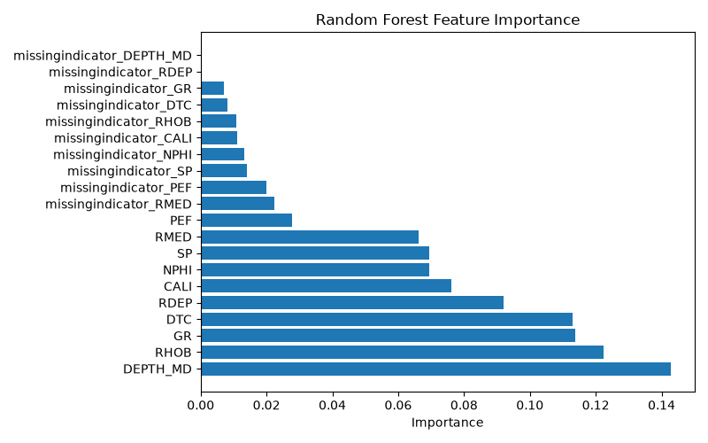
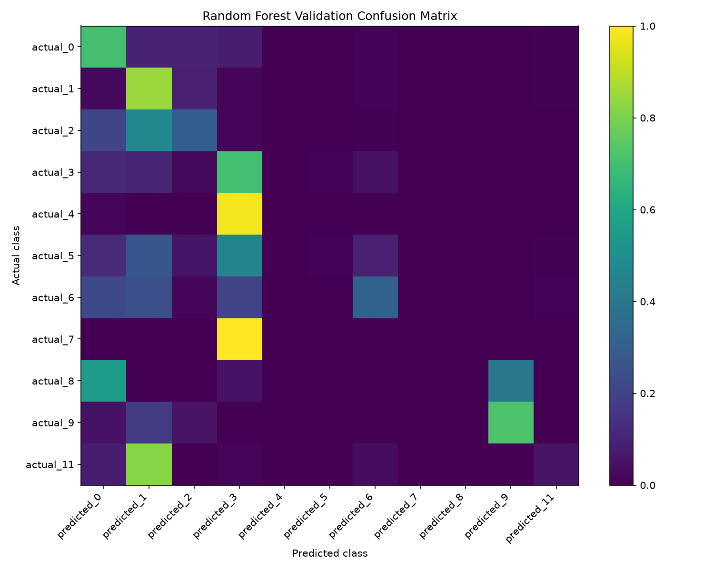

Subsurface ML Evaluation Dashboard
Automated lithology-classification model report
Best model
random_forest
Selection metric
balanced_accuracy
Accuracy
0.7159
Balanced accuracy
0.3314
Macro F1
0.3164
Weighted F1
0.7072
Model leaderboard
| rank | model | accuracy | balanced_accuracy | macro_f1 | weighted_f1 | training_seconds | tuning_seconds |
|---|---|---|---|---|---|---|---|
| 1 | random_forest | 0.7159 | 0.3314 | 0.3164 | 0.7072 | 70.7053 | NaN |
| 2 | random_forest_tuned | 0.7129 | 0.3314 | 0.2898 | 0.7053 | NaN | 114.6061 |
| 3 | logistic_regression | 0.6992 | 0.2326 | 0.2500 | 0.6243 | 102.3837 | NaN |
| 4 | dummy | 0.6098 | 0.0909 | 0.0689 | 0.4620 | 0.0589 | NaN |
Top feature importances
| feature | importance |
|---|---|
| DEPTH_MD | 0.1429 |
| RHOB | 0.1224 |
| GR | 0.1138 |
| DTC | 0.1129 |
| RDEP | 0.0921 |
| CALI | 0.0762 |
| NPHI | 0.0695 |
| SP | 0.0694 |
| RMED | 0.0663 |
| PEF | 0.0279 |
Prediction summary
| predicted_class | count | percentage |
|---|---|---|
| 1 | 133052 | 63.4669 |
| 0 | 31388 | 14.9723 |
| 2 | 24689 | 11.7769 |
| 3 | 12578 | 5.9998 |
| 6 | 4461 | 2.1279 |
| 11 | 1596 | 0.7613 |
| 9 | 1244 | 0.5934 |
| 4 | 463 | 0.2209 |
| 5 | 166 | 0.0792 |
| 7 | 3 | 0.0014 |
Model visualizations
Feature importance

Validation confusion matrix

Reproduce this report
Run
python scripts/build_dashboard.py
from the project root.